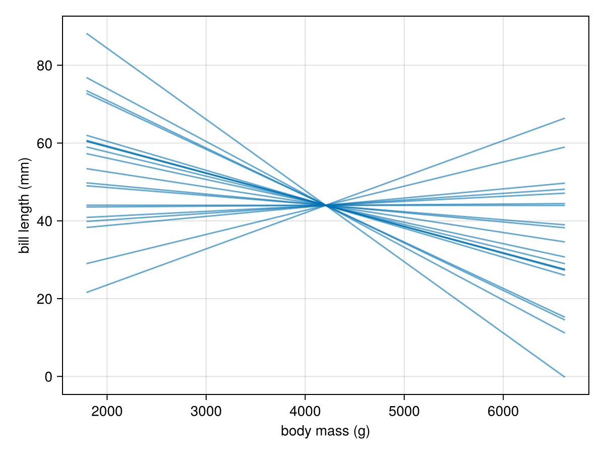
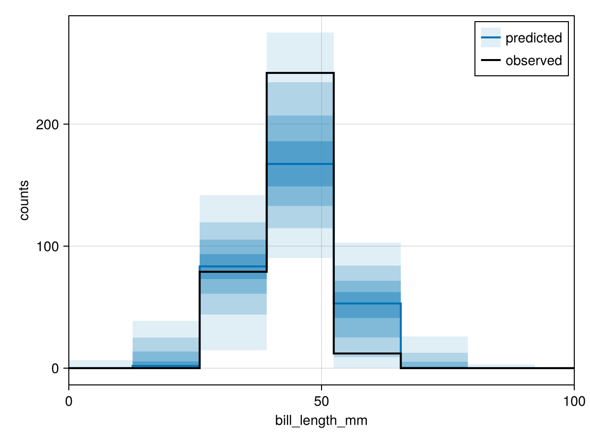
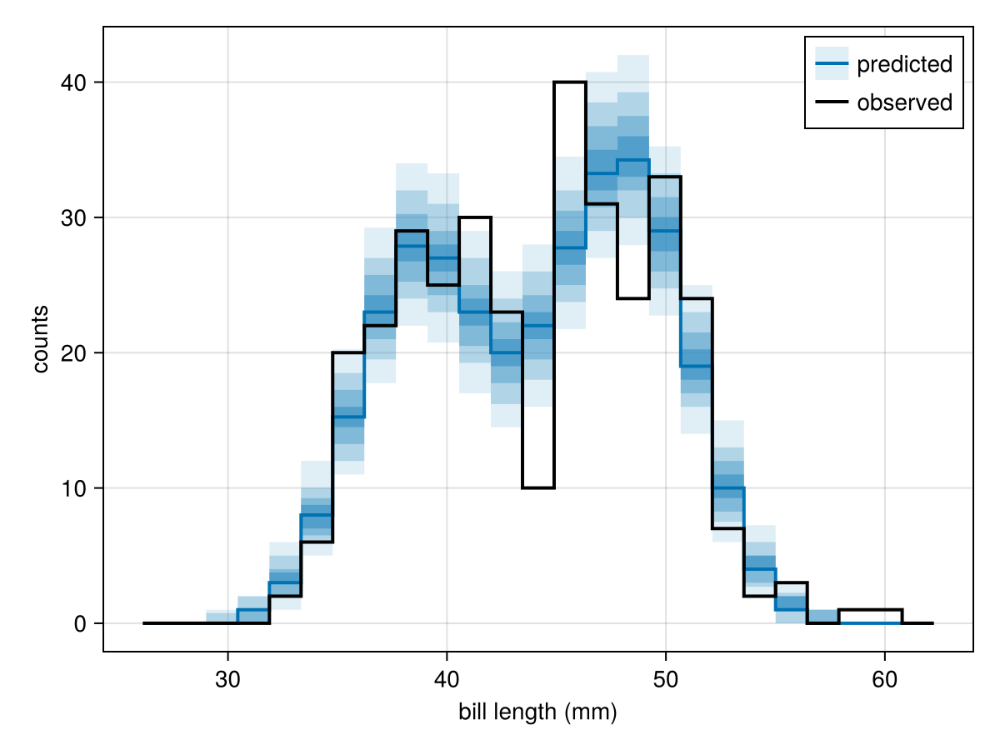
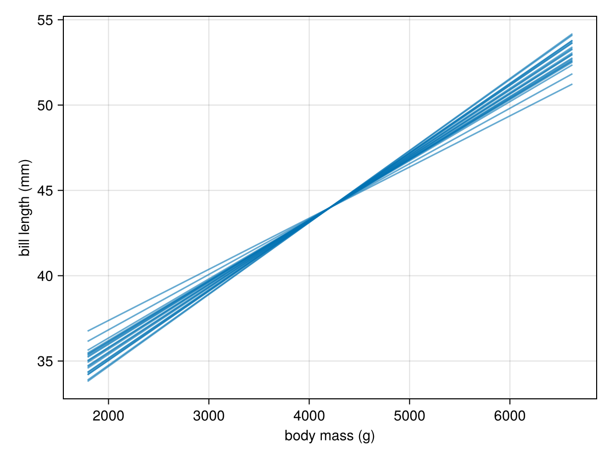

Bayesian workflow
In the worked example below, we demonstrate how Wren and the JuliaBayes ecosystem enable the Bayesian Workflow.
We'll concoct an example with the Palmer penguins dataset. This dataset includes measurements of three different Antarctic penguins species.
We first have to prepare the dataset. We'll z-standardise the variables because it usually improves sampling efficiency and simplifies choosing priors.
using Wren, PalmerPenguins, DataFrames, FlexiChainsusing WrenDists: Normal, Exponentialusing StatsBase: denserank, fit, ZScoreTransform, reconstruct# Load datapenguins = DataFrame(PalmerPenguins.load())# Drop missing values first (this ensures that standardisation doesn't trip over)dropmissing!(penguins)# Fit standardisation transforms so we can unstandardise predictions laterbill_zs = fit(ZScoreTransform, Float64.(penguins.bill_length_mm))mass_zs = fit(ZScoreTransform, Float64.(penguins.body_mass_g))# Tidy up the datastandardize(x) = (x .- mean(x)) ./ std(x)transform!(penguins, names(penguins, Real) .=> standardize => identity)transform!(penguins, :species => denserank => :species_idx)Let's say we're interested in learning if a penguin's bill length increases with body mass, while taking into account that bill lengths between species might differ, too. The model below uses @iid for the per-species intercepts and a @batch loop for the likelihood:
# Define a model for penguin bill length as a function of species and body mass@wren function bill_model(bill_length, species, body_mass) n_species = maximum(species) @iid beta1 ~ Normal(0, 1) size=n_species beta2 ~ Normal(0, 1) sigma ~ Exponential(1) mu = beta1[species] .+ beta2 .* body_mass @batch for i in eachindex(bill_length) bill_length[i] ~ Normal(mu[i], sigma) endendbill_model (generic function with 1 method)Prior predictions
We can now instantiate the Wren model and use it with simulate(model) to draw from the prior (see Working with Models):
model = bill_model(penguins.bill_length_mm, penguins.species_idx, penguins.body_mass_g)simulate(model)ModelResult
├─ parameters => VarNamedTuple
│ ├─ beta1 => [0.693417251585688, 0.13949610591219458, -1.676727133167916]
│ ├─ beta2 => -0.05149675048627073
│ ├─ sigma => 0.6753013006434122
│ └─ bill_length => PartialArray size=(333,) data::Vector{Float64}
│ ├─ (1,) => 0.3096712384024003
│ ├─ (2,) => 0.04207147628648411
│ │ ⋮ (330 more set indices)
│ └─ (333,) => 1.5207080641940287
├─ tracked_quantities => VarNamedTuple()
├─ return_value => [0.3096712384024003, 0.04207147628648411, 0.5608464053394453, 0.6148061458594907, 1.1552837570983, 0.9194566810448919, 0.6726169837385212, 1.2001672277275544, 1.5007079805090102, -0.05867699287263173 … 0.023976649438898323, -0.47225017621984, 0.6267916385626158, -0.3262886531131992, -0.24855183957353313, -0.15032712001530085, 0.8092718303791242, 1.1328730653910881, -0.185462143339342, 1.5207080641940287]
├─ logprior => -362.23405785168825
└─ loglikelihood => 0.0You may have noticed that we did not use @observe in our model definition. This is because @observe param ~ dist will always treat param as an observed variable, even if it was not conditioned on. The consequence would be that we could draw neither prior nor posterior predictions for it.
Alternatively, we can use prior to create a FlexiChain that contains as many prior draws as we specify, and summarise it with summarystats.
chain_prior = prior(model, 1000, 4; progress=false)summarystats(chain_prior[[@vn(beta1), @vn(beta2), @vn(sigma)]])╭─FlexiSummary (9 statistics) ─────────────────────────────────────────────────╮
│ iter collapsed │
│ chain collapsed │
│ ↓ stat = [mean, std, mcse, ess_bulk, ess_tail, rhat, q5, q50, q95] │
│ │
│ Parameters (5) ── VarName │
│ Float64 beta1[1], beta1[2], beta1[3], beta2, sigma │
│ │
│ Extras (0) │
│ (none) │
│ │
│ Summary │
│ param mean std mcse … rhat q5 q50 q95 │
│ beta1[1] -0.0004 1.0104 0.0167 1.0007 -1.6888 0.0079 1.6682 │
│ beta1[2] 0.0146 1.0221 0.0160 0.9999 -1.6769 0.0205 1.6880 │
│ beta1[3] 0.0210 1.0073 0.0158 1.0006 -1.6593 0.0192 1.6578 │
│ beta2 0.0031 0.9950 0.0155 0.9995 -1.6700 -0.0015 1.5912 │
│ sigma 0.9877 1.0084 0.0154 … 1.0002 0.0543 0.6743 2.9543 │
╰──────────────────────────────────────────────────────────────────────────────╯While we could technically continue working with the chain, the simulate(model) syntax lends itself nicely towards visualising individual samples from the prior distribution.
using CairoMakiecolors = Makie.wong_colors()fig = Figure()ax = Axis(fig[1, 1], xlabel="body mass (g)", ylabel="bill length (mm)")xs_z = -3:0.1:3# Draw 20 prior predictions for the slope of body massfor _ in 1:20 vnt = parameters(simulate(model)) ys_z = vnt[@vn(beta2)] * xs_z ys = reconstruct(bill_zs, ys_z) xs = reconstruct(mass_zs, xs_z) lines!(xs, ys, color=(colors[1], 0.6))endfig
You can read more about working with VarName and VarNamedTuple in the VarNames.jl docs.
We may also want to check if the prior distribution of bill_length looks reasonable, i.e., that it doesn't include impossible values such as negative bill_length. FlexiChains provides helpful functions here – first, we reconstruct the draws on the millimeter scale with transform_values and then visualise the prior predictive distribution with pushforward_hist:
using FlexiChains: transform_valueschain_prior = transform_values(chain_prior, @vn(bill_length) => (v -> reconstruct(bill_zs, v)))observed = reconstruct(bill_zs, penguins.bill_length_mm)FlexiChains.Makie.pushforward_hist( chain_prior, @vn(bill_length); observed=observed, axis=(; xlabel="bill_length_mm", limits=((0, 100), nothing)),)
Conditioning on data
Having had a look at the prior, we're now ready to condition the model on the observed data and sample from the posterior. Wren's default autodiff backend is Enzyme (see Working with Enzyme), so we need to make sure to import that first. Then we condition with | (see condition) and sample with nuts:
import Enzymemodel_cond = model | (bill_length=penguins.bill_length_mm,)chain_post = nuts(model_cond, 1000, 4; progress=false)summarystats(chain_post)╭─FlexiSummary (9 statistics) ─────────────────────────────────────────────────╮
│ iter collapsed │
│ chain collapsed │
│ ↓ stat = [mean, std, mcse, ess_bulk, ess_tail, rhat, q5, q50, q95] │
│ │
│ Parameters (5) ── VarName │
│ Float64 beta1[1], beta1[2], beta1[3], beta2, sigma │
│ │
│ Extras (10) │
│ Float64 step_size, tree_depth, is_divergent │
│ is_max_depth, acceptance_rate, log_density │
│ logprior, loglikelihood, logjoint │
│ Union{Missing, Vector{Float64}} return_value │
│ │
│ Summary │
│ param mean std mcse … rhat q5 q50 q95 │
│ beta1[1] -0.6017 0.0455 0.0009 1.0013 -0.6785 -0.6015 -0.5277 │
│ beta1[2] 1.2058 0.0591 0.0011 1.0005 1.1120 1.2041 1.3050 │
│ beta1[3] 0.0480 0.0621 0.0014 1.0011 -0.0523 0.0477 0.1475 │
│ beta2 0.5510 0.0426 0.0010 1.0023 0.4803 0.5513 0.6208 │
│ sigma 0.4442 0.0172 0.0003 … 1.0047 0.4166 0.4437 0.4738 │
╰──────────────────────────────────────────────────────────────────────────────╯Normally we would like to check that chains mixed and sampling went well with more diagnostics, such as diagnostic plots plot(chain_post) or checking for divergent transitions sum(chain_post[:is_divergent]) / prod(size(chain_post)), but we'll leave it at mentioning these for this simple model.
Posterior predictions
Towards the end of the Bayesian workflow, we typically want to check if the model approximates the data-generating process reasonably well with a posterior predictive check.
A posterior predictive check uses the fitted parameters and values of the covariates species and body_mass to predict new values of the outcome bill_length. This can be done with either the same covariate values used to fit the model, or with a new set of covariate values. A new set could either represent a hypothetical new group of penguins that we want to predict for, or help us visualise how bill_length changes with body_mass, resulting in a plot similar to the prior slope visualisation above.
We'll begin with the former and once again use simulate—but this time we'll simulate from the conditioned model instead of the prior! FlexiChains.pushforward_hist then plots histograms for our posterior prediction and overlays the observed data, giving us an opportunity to spot if the two would clearly diverge:
chain_pred = simulate(model, chain_post)chain_pred = transform_values(chain_pred, @vn(bill_length) => (v -> reconstruct(bill_zs, v)))FlexiChains.Makie.pushforward_hist( chain_pred, @vn(bill_length); observed=observed, axis=(; xlabel="bill length (mm)"),)
The model seems to capture the distribution of the observed data well!
Now let's see what the model learned about how body_mass relates to bill_length, by drawing single samples from the chain and extracting them with parameters.
fig = Figure()ax = Axis(fig[1, 1], xlabel="body mass (g)", ylabel="bill length (mm)")xs_z = -3:0.1:3# Draw 20 posterior samples of the slope of body massfor _ in 1:20 vnt = rand(chain_post; parameters_only=true) ys_z = vnt[@vn(beta2)] * xs_z ys = reconstruct(bill_zs, ys_z) xs = reconstruct(mass_zs, xs_z) lines!(xs, ys, color=(colors[1], 0.6))endfig
As we may have expected, more penguin means more bill!
Tracked quantities
Quite regularly in applied statistical modelling, we're after a quantity that we can't express as a single parameter of our model. Rather, it's often some downstream quantity that we compute by combining several parameters with (potentially new / hypothetical) observations. You can tell Wren that you want to track these downstream quantities with @track.
Continuing with the penguin model from before, let's now assume that there is something special about the conditions on each island. These conditions make all the penguins on a given island more similar to each other; that could for example be caused by better food sources near some islands than others, or some islands being more prone to disruptive weather events than others.
We can express these correlated observations in Bayesian modelling with a hierarchical model. Since this model component is quite common and thus reusable, it's a good candidate to be written as a submodel:
@wren function hierarchical(size) mu ~ Normal() tau ~ Exponential(1) @iid z ~ Normal() size=size return mu .+ tau * zendhierarchical (generic function with 1 method)In this hierarchical model, we define a global average bill length across all islands $\mu$ and the heterogeneity between islands $\tau$. To illustrate this, let's assume a scenario where $\tau$ is rather small; this would correspond to a world where conditions between islands aren't that different after all. It might be helpful to also consider the most extreme setting where $\tau = 0$: here, all islands would have identical conditions, and the hierarchical structure would disappear entirely. This scenario is called "complete pooling". On the contrary, if we assume $\tau$ to be really, really large, this would correspond to a scenario where islands are so different that we might as well estimate each of their means individually. This is called "no pooling".
In short, learning $\tau$ from the data ("partial pooling") infers just how much information we should share between islands. This comes with many nice benefits like avoiding overfitting!
The tracked quantity we're after in this example is the proportion of Adelie penguins with a dangerously long bill (there's no domain knowledge in this, we just assume that bills longer than 42 mm are scary).
import StatsBaseconst SCARY_BILL_ZSCALE = only(StatsBase.transform(bill_zs, [42.0]))@wren function bill_model_hierarchical(bill_length, island, body_mass) n_islands = maximum(island) beta1 = (isl ~ hierarchical(n_islands)) beta2 ~ Normal(0, 1) sigma ~ Exponential(1) mu = beta1[island] .+ beta2 .* body_mass @batch for i in eachindex(bill_length) bill_length[i] ~ Normal(mu[i], sigma) end @track scary_bill = let pred_bill = rand.(Normal.(mu, sigma)) mean(pred_bill .> SCARY_BILL_ZSCALE) endendbill_model_hierarchical (generic function with 1 method)You might rightfully wonder why we're only considering Adelie penguins this time. The reason for this is that the Adelies are the only species occurring on all three islands; for both Gentoos and Chinstraps, we only have data from one island, respectively. In short, we're simply not set up to estimate how island conditions influence the bill lengths of these two species!
Having recovered from that disappointment, let's now condition our expanded model on the observations again and sample.
# Adelies are the only species found on all three islandsadelies = subset(penguins, :species => ByRow(==("Adelie")))transform!(adelies, :island => denserank => :island_idx)model = bill_model_hierarchical( adelies.bill_length_mm, adelies.island_idx, adelies.body_mass_g, ) | (bill_length=adelies.bill_length_mm,)chain_tq = nuts(model, 1000, 4; progress=false)summarystats(chain_tq)╭─FlexiSummary (9 statistics) ─────────────────────────────────────────────────╮
│ iter collapsed │
│ chain collapsed │
│ ↓ stat = [mean, std, mcse, ess_bulk, ess_tail, rhat, q5, q50, q95] │
│ │
│ Parameters (8) ── VarName │
│ Float64 scary_bill, isl.mu, isl.tau, isl.z[1], isl.z[2], isl.z[3], beta2 │
│ sigma │
│ │
│ Extras (10) │
│ Float64 step_size, tree_depth, is_divergent, is_max_depth, acceptance_rate │
│ log_density, return_value, logprior, loglikelihood, logjoint │
│ │
│ Summary │
│ param mean std … rhat q5 q50 q95 │
│ scary_bill 0.1219 0.0311 1.0029 0.0753 0.1233 0.1781 │
│ isl.mu -0.6493 0.0738 1.0091 -0.7687 -0.6490 -0.5243 │
│ isl.tau 0.1276 0.2047 1.0264 0.0054 0.0686 0.3772 │
│ isl.z[1] 0.1210 0.7860 1.0061 -1.1425 0.0768 1.4883 │
│ isl.z[2] -0.3615 0.8000 … 1.0021 -1.7311 -0.3167 0.8943 │
│ isl.z[3] 0.1910 0.7533 1.0048 -1.0367 0.1717 1.4223 │
│ beta2 0.4653 0.0575 1.0039 0.3710 0.4634 0.5586 │
│ sigma 0.4131 0.0248 1.0107 0.3750 0.4111 0.4563 │
╰──────────────────────────────────────────────────────────────────────────────╯So far so good, but the result for scary_bill in chain_tq only tells us what we'd expect for the specific islands we collected data from. Sometimes, however, that's not what we're after in a hierarchical model.
What if we want to quantify the effect in general, in the hypothetical "population" of islands that gave rise to our observed sample? To transfer our inferences to this population, we need to sample from the inferred population of islands Normal(isl.mu, isl.tau).
But how would we do this in our model? After all, the number of islands is part of our model—our z parameter has as many entries as we have islands!
Before figuring out how to escape the structure of our initial model, we first define a new data set with 300 hypothetical new islands (the number 300 is arbitrary here, it should just be large enough to represent the hypothetical "population" of islands).
n_new = 300island_new = 1:n_new# Resample the observed body massbody_mass_g_new = rand(adelies.body_mass_g, n_new)Now you may wonder how we can tell our model to ignore the individual isl.z parameters in the model. The key here is that simulate will use the parameters from the chain if they are stored there, and otherwise fall back to sampling from the prior.
That's exactly what we want here!
By sampling isl.z from the prior, we get draws from Normal(isl.mu, isl.tau). So all we need to do is drop isl.z from the chain:
chain_sub = chain_tq[filter(!=(@vn(isl.z)), FlexiChains.parameters(chain_tq))]model_new = bill_model_hierarchical(zeros(n_new), island_new, body_mass_g_new)chain_new = simulate(model_new, chain_sub)mean(chain_new[@vn(scary_bill)]), std(chain_new[@vn(scary_bill)])(0.13827833333333334, 0.05266952993652803)As you can see, our estimate for the hypothetical population is quite similar to that of the specific islands that we estimated our first model with. The reason for this is simply because there isn't a lot of heterogeneity between these islands (see the estimate for isl.tau in chain_tq), and even if there was, our estimate would only be weakly informed by the data given we only recorded data for three islands.